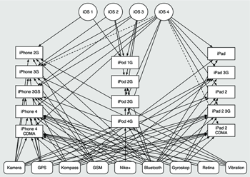

Zum Online-Shop
Zum Online-Shop
1.3 iOS-Hardware
Das iPhone ist nicht nur ein tragbarer Computer, der über zahlreiche Kommunikationsschnittstellen wie GSM, UMTS, Bluetooth und WLAN verfügt. Es bietet darüber hinaus auch noch eine Kamera, ein GPS-Modul und Bewegungssensoren. Die Bedienung des iPhones unterscheidet sich von der Bedienung eines konventionellen Desktop-Computers enorm, denn die Eingabemedien sind weder Tastatur noch Maus, sondern ein Touchpad, das über Tippen und Ziehen mit einem oder mehreren Fingern bedient wird, und die Bewegungssensoren.
Vom iPhone gibt es mittlerweile drei verschiedene Modelle, die sich in der Hardware-Ausstattung unterscheiden. Allen gemeinsam ist das Multitouch-Display, die Bewegungs-, Helligkeits- und Näherungssensoren, GSM, GPRS, WLAN und Bluetooth. Als CPU kommen bei allen iOS-Geräten ARM-Prozessoren zum Einsatz, die sich je nach Modell in ihrer Leistungsfähigkeit unterscheiden.
Das iPhone der zweiten Generation, das iPhone 3G [6](Der Zusatz 3G ist übrigens eine andere Bezeichnung für UMTS und bedeutet nicht etwa »3. Generation des iPhone«.), verfügt zusätzlich über ein GPS-Modul und die Fähigkeit, UMTS- und HSDPA-Verbindungen aufzubauen. Genauso wie die erste Generation verfügt das 3G über 128 MB Arbeitsspeicher. Dies ist im Vergleich zu Desktop-Systemen, bei denen man den Arbeitsspeicher mittlerweile in Gigabyte misst, verschwindend gering.
Die nachfolgende Version des iPhones, das iPhone 3GS, erlaubt HSDPA-Verbindungen mit bis zu 7,2 Mbit/s, besitzt einen Kompass, genauer gesagt ein Magnetometer, eine verbesserte Kamera und einen neuen Grafikchip mit Unterstützung für OpenGL ES 2.0. Darüber hinaus ist die CPU des iPhone 3GS leistungsfähiger als die ihrer Vorgänger, da immer aufwendigere Spiele für das iPhone erhöhte Anforderungen and die Hardware stellten. Gleichzeitig hat Apple den Arbeitsspeicher auf 256 Megabyte vergrößert.
2010 erschien mit dem iPhone 4 [7](Aber diese 4 bezeichnet die iPhone-Modellreihe.) der wiederum leistungsfähigere Nachfolger des iPhone 3GS. Den Arbeitsspeicher hat Apple im iPhone 4 auf 512 MB vergrößert, und die Bewegungsmessung wurde durch ein zusätzlich zum Bewegungssensor integriertes Gyroskop erweitert. Neben der Verbesserung der Kamera hat Apple auf der Vorderseite des iPhone 4 eine weitere Kamera integriert, die hauptsächlich für Anwendungsgebiete wie Videotelefonie vorgesehen ist. Das im Oktober 2011 erschienene iPhone 4S verfügt als Neuerung über Spracherkennungsfunktionen.
Das Display hat beim iPhone 4 den Namen Retina Display bekommen. Der Hinweis auf die Netzhaut des menschlichen Auges (Retina) soll die hohe Auflösung des Displays von 960 × 640 Pixeln auf einer Größe von 3,5 Zoll unterstreichen. Diese Auflösung ist so detailliert, dass das menschliche Auge aus einem »normalen« Abstand keine einzelnen Pixel mehr unterscheiden kann.
Der App Store unterscheidet derzeit nicht explizit zwischen den verschiedenen Versionen des iPhone, weswegen Sie Ihre Programme so gestalten sollten, dass sie auf allen Hardware-Plattformen laufen. Dazu stellt Cocoa Touch Klassen bereit, um Informationen über das jeweilige iPhone-Modell herausfinden zu können.
| Modell versus Eigenschaften |
|
Bei geräteabhängigen Programmen ist es besser, auf Hardwareeigenschaften anstatt auf die Modellreihe zu testen. Prüfen Sie also beispielsweise lieber, ob das Gerät eine Kamera besitzt, anstatt ob es ein iPhone, ein iPod touch oder ein iPad 2 ist. Apple stellt ungefähr jährlich pro Gerätereihe ein neues Modell vor, sodass Sie sonst Ihre App ständig anpassen müssten. |
2010 hat Apple neben iPod touch und iPhone mit dem iPad eine weitere Geräteklasse auf iOS-Basis eingeführt. Das iPad ist ein tastaturloses Tablet-Device mit Touchscreen, das im Prinzip einen großen iPod touch darstellt. Mit einer Auflösung von 1024 × 768 Pixeln auf einem Display der Größe 9,7 Zoll ist das iPad wesentlich größer als iPhone und iPod und bietet damit wesentlich weitreichendere Darstellungsmöglichkeiten als seine kleinen Brüder.
Im Unterschied zum iPhone 4 besitzt das iPad nur 256 MB Arbeitsspeicher. Eine Telefonfunktion ist nicht vorgesehen, wenngleich es das iPad auch mit UMTS-Ausstattung gibt. Letztere dient aber nur zur mobilen Datenübertragung.
2011 folgte das iPad 2, das über dieselbe Auflösung wie das erste iPad verfügt. Mit dem Prozessor Apple A5 besitzt es aber eine schnellere CPU sowie einen Hauptspeicher von 512 MB. Auch das iPad 2 existiert in den zwei Ausstattungen WLAN und WLAN + UMTS.
Neben den vorstehend genannten iPhones und iPads läuft iOS noch auf dem ebenfalls 2011 veröffentlichten »Verizon-iPhone«, einem CDMA-fähigen iPhone für das amerikanische Mobilfunknetz des Anbieters Verizon, und auf allen Modellen des iPod touch (1G, 2G, 3G und 4G).
Sie müssen daher gut darauf achten, vor der Verwendung von Hardware-Funktionen, über die nicht alle Plattformen verfügen, deren Anwesenheit zu prüfen. Abbildung 1.9 zeigt, wie schnell eine breite Unterstützung der verschiedenen iOS-Versionen auf den unterschiedlichen Plattformen mit den verschiedenen Hardware-Merkmalen unübersichtlich werden kann.
Da auf iPad und iPhone dasselbe Betriebssystem läuft und die Bedienung ebenfalls über einen Touchscreen erfolgt, unterscheidet sich die Programmierung für das iPad und das iPhone kaum. Das größere Display und die höhere Auflösung stellen allerdings größere Ansprüche an das Design von Applikationen und an das Layout der Benutzeroberflächen. iPhone-Apps können zwar in einer Emulationsdarstellung auf dem iPad laufen, sind aber entweder nur so klein wie auf dem iPhone, wodurch die Größe des Displays nicht zum Tragen kommt, oder das iPad passt die Anzeige an das größere Display an, was zu einer unschönen, pixeligen Darstellung führt.
Abbildung 1.9 Geräte, Versionen und Features
Beim Erstellen von Apps für iPhone und iPad liegt die Hauptarbeit daher in der Pflege von zwei verschiedenen Benutzungsoberflächen. Bei durchgängiger Anwendung des MVC-Paradigmas (siehe Kapitel 2), das eine Trennung von Darstellung und Funktion vorsieht, hält sich der Aufwand allerdings in Grenzen.
Durch ihre neuartige Benutzungsschnittstelle und ihre Hardware-Ausstattung ermöglichen iPhone und iPad eine vollkommen neue Art der Benutzerinteraktion. Die Bedienung über das Multitouch-Display unterscheidet sich grundlegend von der Bedienung eines PCs. Der Benutzer wählt mit einem oder mehreren Fingern Elemente auf dem Display aus und steuert so die Software. Das bedeutet, dass das herkömmliche Denken über die Auswertung von Maus- und Tastatur-Events auf dem iPhone keine Bedeutung hat. Als Programmierer müssen Sie sich mit einer vollständig neuen Benutzerschnittstelle vertraut machen.
Die Sensoren des iPhones erlauben eine Aussage darüber, in welcher Lage sich das Gerät befindet, ob es bewegt wird oder ruhig liegt, ob es in heller oder dunkler Umgebung betrieben wird und ob es verdeckt wird, weil es sich beispielsweise am Ohr des Benutzers befindet.
Das iPhone kann seinen geografischen Standort über drei verschiedene Methoden bestimmen. Die erste ist die Verwendung des eingebauten GPS-Moduls (iPhone 3G und iPhone 3GS). Darüber hinaus beherrscht das iPhone Wifi- und Mobilfunk-Triangulation. Bei der Wifi-Triangulation bestimmt das iPhone seinen Standort aus dem Vergleich der erreichbaren WLAN-Hotspots mit einer Datenbank. Im Gegensatz zu den anderen Verfahren zur Positionsbestimmung steht diese Methode auch auf Geräten ohne SIM-Karte (iPod touch, iPad) zur Verfügung.
Die Mobilfunk-Triangulation funktioniert ähnlich zur Wifi-Triangulation. Hierbei bestimmt das iPhone durch die Lagebestimmung zu Mobilfunk-Sendern seine Position. Die Positionsbestimmung mit GPS ist die genaueste, erfordert aber freie Sicht auf mindestens vier GPS-Satelliten und benötigt zusätzlichen Strom für den Betrieb des GPS-Moduls. Die Wifi- und Mobilfunk-Triangulation funktioniert mit hoher Genauigkeit in dicht besiedelten Gebieten und braucht keinen zusätzlichen Strom, wenn Mobilfunk und WLAN ohnehin aktiviert sind.
Ihr Kommentar
Wie hat Ihnen das <openbook> gefallen? Wir freuen uns immer über Ihre freundlichen und kritischen Rückmeldungen.


{kind=link}